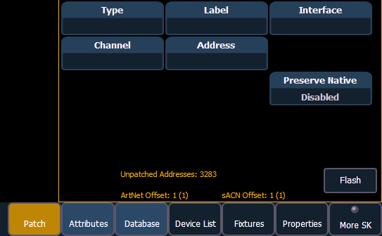

With patch open, Ion defaults to this display. It provides access to data input fields that you may use to define devices in your lighting system.
Note: The Artnet and sACN offset will display here.

{Channel} - In the patch display, all channels are displayed in numerical order. When multiple devices are patched to the same channel, the channel number is only displayed in the first row, additional devices are indicated with part extensions (example P2) on the next row of the table.
Select the channel number using the control keypad or the direct selects.
{Type} - Ion defaults to patching dimmers. To specify a specific device type for the selected channel, press the {Type} button from the CIA.
The two columns on the left side of the CIA are pageable and show manufacturer names. The four columns to the right of the manufacturer’s list are pageable devices that are available from the selected manufacturer for patching.
Selecting a specific manufacturer repaints the display with all devices that are available from that manufacturer. After you select a device, the fixture/ device type appears in the command line, in the {Type} box in the CIA, and in the “Type” field for that channel in the patch display.
{Label} - An optional user-defined label. You can use the [Label] key to display the virtual PC keyboard on the CIA. Pressing {Label} or [Label], after a label has already been assigned, will display the label on the command line for editing purposes. Pressing [Label] [Label] will clear the text.
[1] [At] [5] [Label] <S4 house right> [Enter] - patches channel 1 to output 5 and labels channel 1 as “S4 house right”.
{Address} - A required entry field for any device. You may use the either the [At] or [Address/Patch] key instead of the {Address} button.
Use the keypad to define the starting address for the device (from 1 to 32,767,488) or a port and offset value.You may enter a start address without defining an end address.
Ion will draw this information from the library data. If you wish to leave a larger output gap than required by the library, use {Offset}. See Using {Offset} in Patch .
If you specify a start address that conflicts with other channels already patched, the conflicting channels will be unpatched after a confirmation is provided by the user.
{Interface} - An optional field used to specify what protocols and interfaces should be used for the output. When the field is left blank, the default data output is used as selected in the {Network}section of the ECU and {Outputs} section of Setup. For more information about setting defaults see Output Protocols and Outputs . The interface options available are sACN, Net 2- EDMX, ArtNet, Avab UDP, and Local DMX, depending on what has been enabled in the {Network} and {Local I/O} sections of the ECU for the desk. If an output option is not enabled, it will appear grayed out in the {Interface} list.
{Preserve Native} - When Preserve Blind Cue is enabled, and you make changes to patch, your cues' real world levels (like pan degrees) will be converted so that the DMX output is preserved instead of the degrees. This is primarily useful for fixture substitutions.
{Flash} - will bring a channel or address to full, and then every other second the level will move to 15%. That will hold for 1 second, and then the level will return to full. The channel or address will keep flashing until either the command line is cleared or {Flash} is selected again.